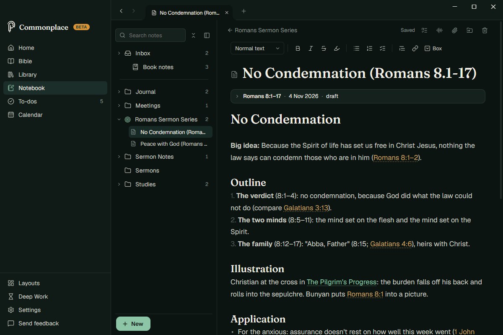

Commonplace
The note-taking and productivity app for pastors
Every note, every task, every text — all connected.
Search a passage. See everything you've ever read, written, or preached on it.

Scripture connects everything
Write "Rom 8:28" anywhere and Commonplace finds it, links it, and gathers every note, sermon and book that cites it.

Your books, searchable
Read your PDFs and EPUBs, highlight, listen, and find every verse a book quotes.

Your week in one place
Notes, to-dos and your calendar side by side: Google, Outlook or iCloud.

Your notes are yours
Every note is a plain .md file in a folder you choose. Open it in any app, today or in twenty years.
- No account
- Works offline
- Nothing sent to us
- Notebook
- No Condemnation (Romans 8.1-17).md
- Peace with God (Romans 5.1-11).md
- Elders meeting.md
- Baxter on the work of the pastor.md
- Tasks
- Church.md
--- passage: "Romans 8:1–17" status: draft --- # No Condemnation **Big idea:** Because the Spirit of life has set us free in Christ Jesus, nothing the law says can condemn those who are in him (Romans 8:1–2).
Try Commonplace
For Mac and Windows. Free while it's in testing.